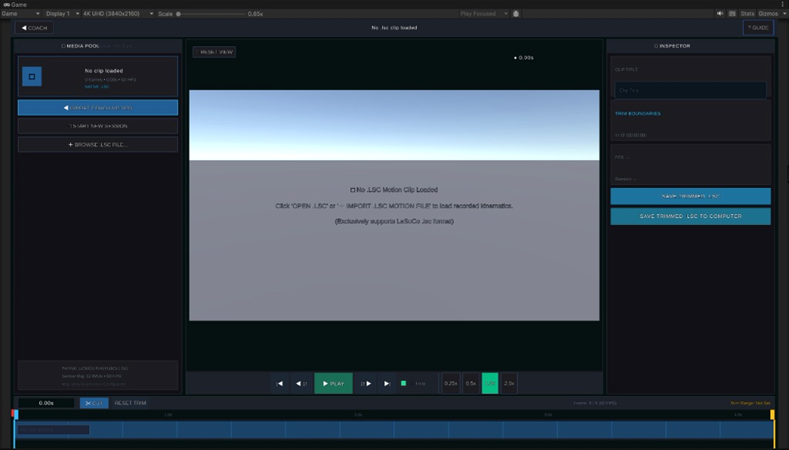
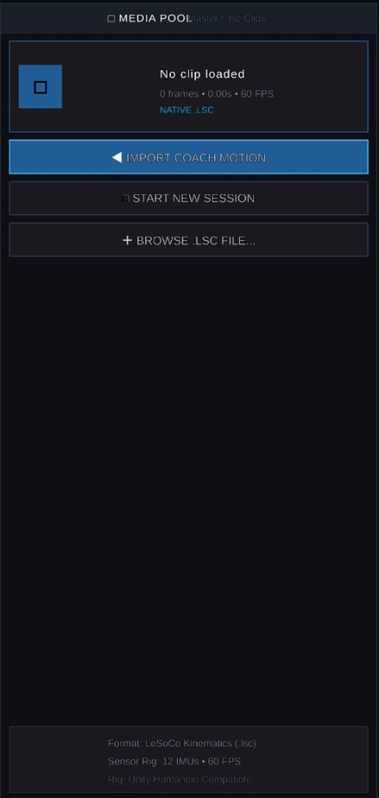
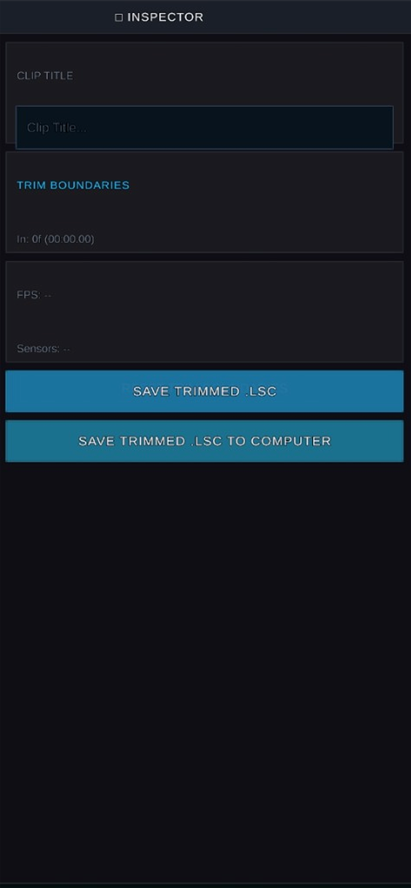
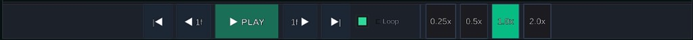
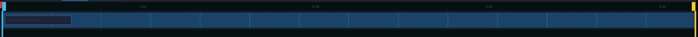

STUDIO
LESOCO STUDIO • 4K UHD
Precision in every pixel.
A centralized, hardware-accelerated 4K workspace engineered exclusively for the LeSoCo .lsc kinematics format, featuring multi-clip media management and non-destructive trimming.

Media Pool & Native .LSC Loader.
Seamlessly organize and access your kinematics library. The media pool loads raw take sessions alongside verified coach benchmarks in real time.
- Exclusive .LSC Support: Purpose-built binary kinematics container optimized for 12 IMU sensors at 60 FPS.
- One-Click Coach Import: Load baseline master sessions (
< IMPORT COACH MOTION) into memory with zero latency. - Session Continuity: Start fresh takes (
START NEW SESSION) or browse local.lsctakes without reloading the 3D scene.

Boundary Trimming & Inspector.
Isolate crucial biomechanical phases without altering your original capture data.
- Frame-Accurate Boundaries: Set precise in-point start boundaries (e.g.
In: 0f (00:00.00)) and clip titles. - Direct Save Actions: Save trimmed clips directly into your project session (
SAVE TRIMMED .LSC) with a single click. - Local Export Pipeline: Export standalone
.lscfiles straight to your computer hard drive for external analysis or sharing.

Multi-Speed Transport & Boundary Track.
Analyze athletic motion across granular playback speeds with interactive boundary handles:
- Micro-Stepping Controls: Step forward and backward frame-by-frame (
< 1fand1f >) or jump to sequence extremities (|<and>|). - Multi-Speed Scaling: Toggle instantly between 0.25x, 0.5x, 1.0x real-time, and 2.0x playback rates.
- Color-Coded Boundaries: Visual red start handle and yellow end handle define the exact active trim window across the multi-second timeline.


Technical Specifications
Native Format
.lsc (Kinematics)
Display Resolution
4K UHD (3840 × 2160)
Sampling Frequency
60 FPS Native
Sensor Architecture
12 IMUs / Sony Mocopi
Avatar Rig
Standard Humanoid 3D
Playback Velocity
0.25x • 0.5x • 1.0x • 2.0x